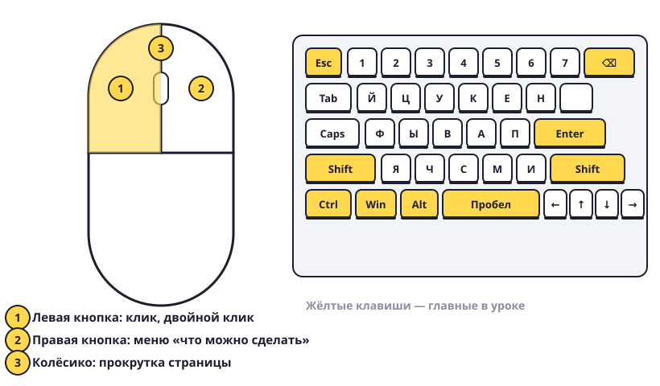

Мышь и клавиатура
Мышь — твоя рука на экране. Клавиатура — твой голос. Учимся ими командовать.

Мышь
- Двигай мышь — по экрану бегает стрелочка. Она называется курсор.
- Левая кнопка, один раз — это клик. Так выбирают: нажимают кнопки, выделяют значок.
- Левая кнопка, два раза быстро — двойной клик. Так открывают программы и папки на рабочем столе.
- Правая кнопка — открывает меню со списком действий: «Открыть», «Переименовать», «Удалить». Это как спросить: «А что с этим можно сделать?»
- Колёсико — крутишь и страница едет вверх-вниз. Это называется прокрутка.
- Перетаскивание: нажми левую кнопку на значке, не отпускай, двигай мышь, отпусти в другом месте. Значок переедет.
Клавиатура
- Enter — «Готово» или «Новая строка».
- Backspace (стрелка влево ←, над Enter) — стирает букву слева от курсора.
- Пробел — длинная клавиша внизу, делает пробел между словами.
- Shift — держишь и нажимаешь букву → получается БОЛЬШАЯ буква. Ещё так набирают знаки сверху цифр: Shift+1 = !
- Alt+Shift или Win+Пробел — переключить язык (русский ↔ английский). Какой язык сейчас, видно справа внизу: РУС или ENG.
- Esc — «Отмена, я передумал». Закрывает меню и окошки с вопросами.
- Стрелки ← ↑ → ↓ — двигают курсор по тексту.
Попробуй сам: нажми правой кнопкой на пустом месте рабочего стола, посмотри меню и закрой его клавишей Esc. Перетащи любой значок в другой угол экрана и верни обратно.
Если случайно нажал не то — почти всегда спасает Esc или Ctrl+Z («отменить»).